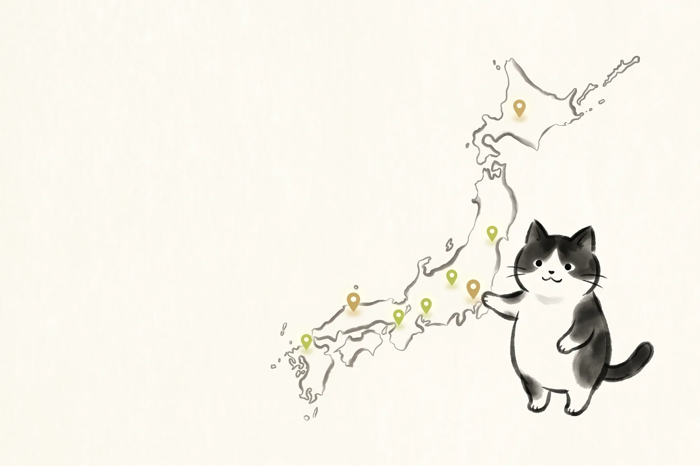

ホーム ＞ 全国詩吟教室マップ

全国5,000件の詩吟教室を探せます。
全国の詩吟教室情報を、地域・流派・連絡先などから探せるマップです。詩吟を始めたい方、近くの教室を探したい方は、まずこちらをご利用ください。
使い方
教室マップは、3つの探し方に対応しています。ご自身の探しやすい方法で、気になる教室を見つけてみてください。
地域から探す
お住まいの都道府県や市区町村の名前で検索すると、近くの教室が一覧で表示されます。まずはお住まいの地域名で試してみてください。
流派から探す
通いたい流派が決まっている方は、流派名から絞り込むこともできます。流派がわからない場合は、地域からの検索だけで問題ありません。
連絡先を確認する
気になる教室が見つかったら、掲載されている連絡先から見学や体験レッスンについて問い合わせてみましょう。
掲載情報についての注意
教室マップに掲載している情報は、できる限り正確なものになるよう努めていますが、教室の移転や活動休止、連絡先の変更などにより、実際の状況と異なる場合があります。
見学や体験レッスンをご検討の際は、訪問前に一度、掲載されている連絡先へご確認いただくことをおすすめします。掲載内容に誤りがある場合や、情報の修正・削除をご希望の場合は、下記のフォームからご連絡ください。
教室選びのポイント
- 流派の違い
- 同じ漢詩でも、流派によって節回しが少しずつ異なります。気になる流派があれば、そこから探してみるのもひとつの方法です。
- 見学や体験の可否
- 多くの教室では見学や体験レッスンを受け付けています。実際の雰囲気を確かめてから決めると、安心して始められます。
- アクセスや練習の曜日・時間
- 無理なく通い続けられる場所や時間かどうかも、大切な確認ポイントです。長く続けるためには、通いやすさも重要です。
- 費用
- 入会金や月謝は教室によってさまざまです。見学や問い合わせの際に、あわせて確認しておきましょう。
- 先生や教室の雰囲気との相性
- 最終的には、教えてくださる先生や教室の雰囲気が自分に合うかどうかがいちばん大切です。気になる教室が複数あれば、いくつか見学してみるのもおすすめです。
よくある質問
近くの詩吟教室はどう探せますか？
全国詩吟教室マップから、お住まいの地域名や流派名で検索してみてください。全国約5,000件の詩吟教室を、地域・流派・連絡先から探すことができます。気になる教室が見つかったら、まずは見学のご連絡をしてみましょう。
掲載情報の修正や削除は依頼できますか？
はい、受け付けています。教室や吟士など関係者の方からの修正・削除依頼に対応しています。修正・削除依頼ページのフォームから、該当する掲載内容とご希望をお知らせください。確認のうえ順次対応いたします。
流派がわからなくても大丈夫ですか？
大丈夫です。流派がわからない場合は、まず地域名だけで検索していただいて構いません。教室に問い合わせるときに流派を尋ねてみるのも、詩吟について知る良いきっかけになります。
教室に連絡するときは何を伝えればいいですか？
詩吟が初めてであること、見学や体験レッスンを希望していることを伝えていただければ十分です。持ち物や服装、費用について気になる場合は、あわせて確認しておくと安心です。
マップに教室が載っていない場合はどうすればいいですか？
掲載情報は順次追加を進めています。近くに教室が見つからない場合は、オンライン教室の吟猫道場もご検討ください。また、教室情報の追加や修正のご連絡もお待ちしています。
最終更新日: 2026年7月11日
運営: heyhey｜YouTube「詩吟ちゃんねる」運営・詩吟歴25年以上・2018年全国コンクール優勝